Non-Runner Solved
Figure out why the G80 arrived as a non-runner, correct the problem and get the car running again.
This low-mileage Genesis G80 was running when it arrived, but front-end collision damage meant there was plenty of work ahead. Explore the repairs, the finished car and the final driving review.
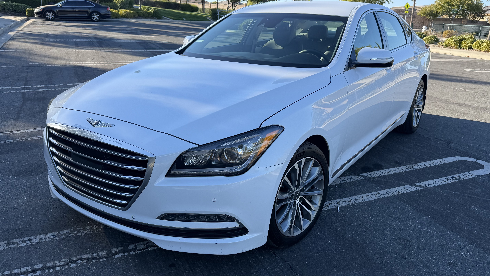
The front-end collision damage is part of the story. Compare the starting point with the finished Genesis after the rebuild.
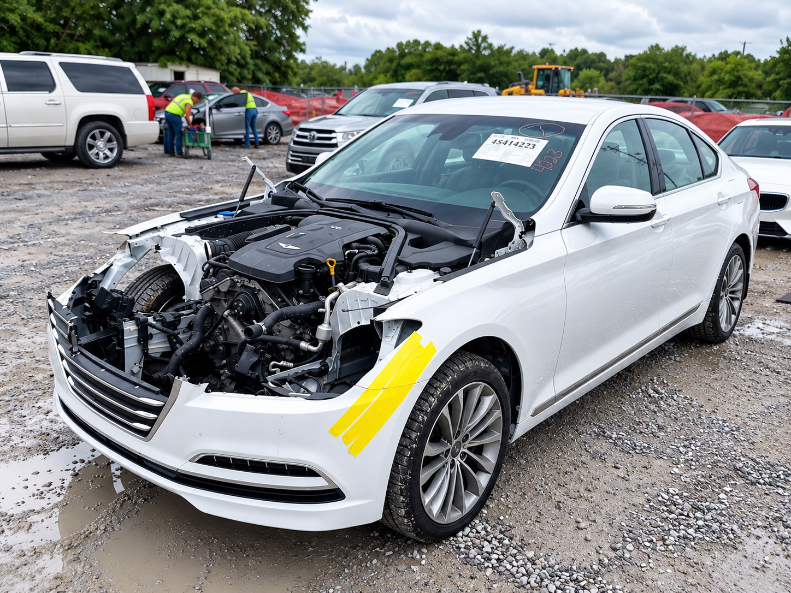
Clean body lines, signature Genesis grille and a complete look at the repaired front end from multiple angles.
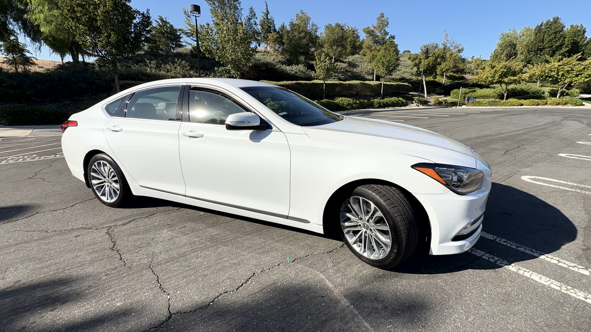
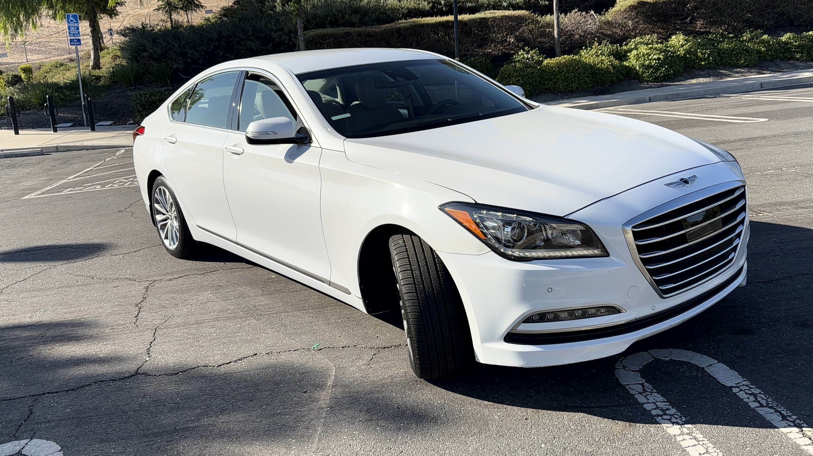
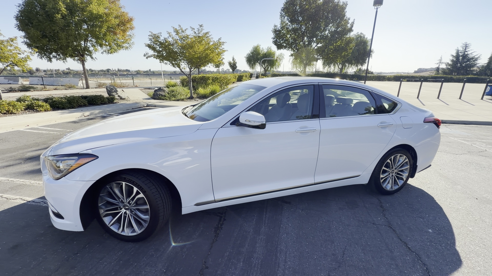
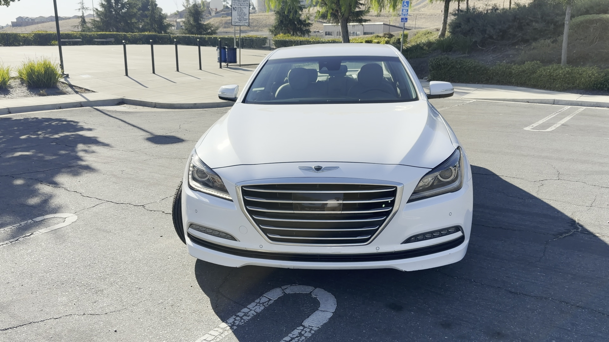
The G80's comfortable cabin, traditional physical controls and V6 engine are part of the final walkaround and review.
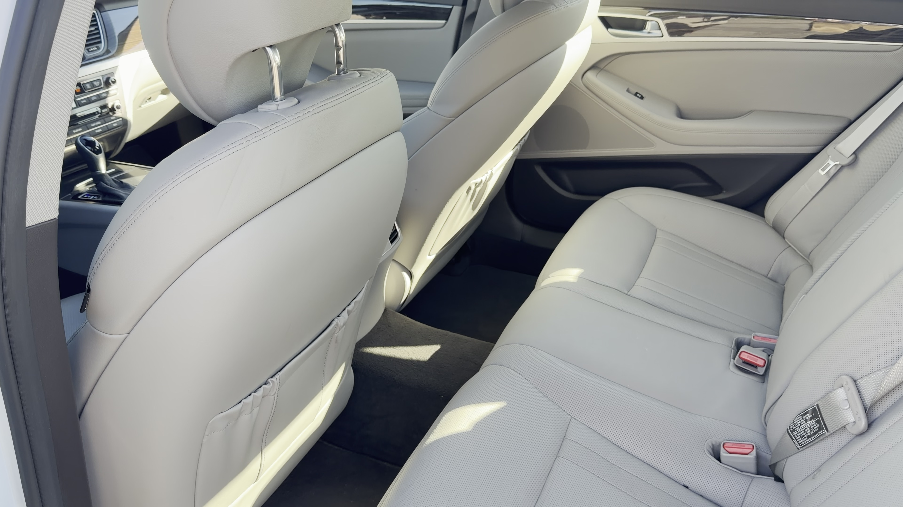
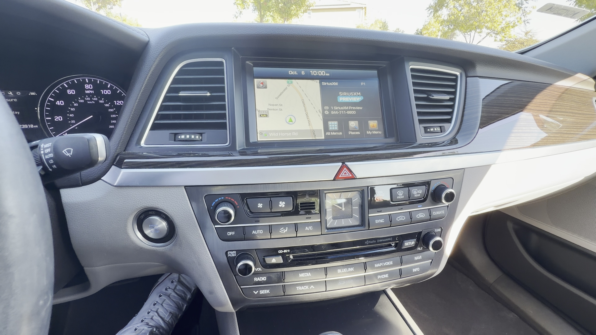
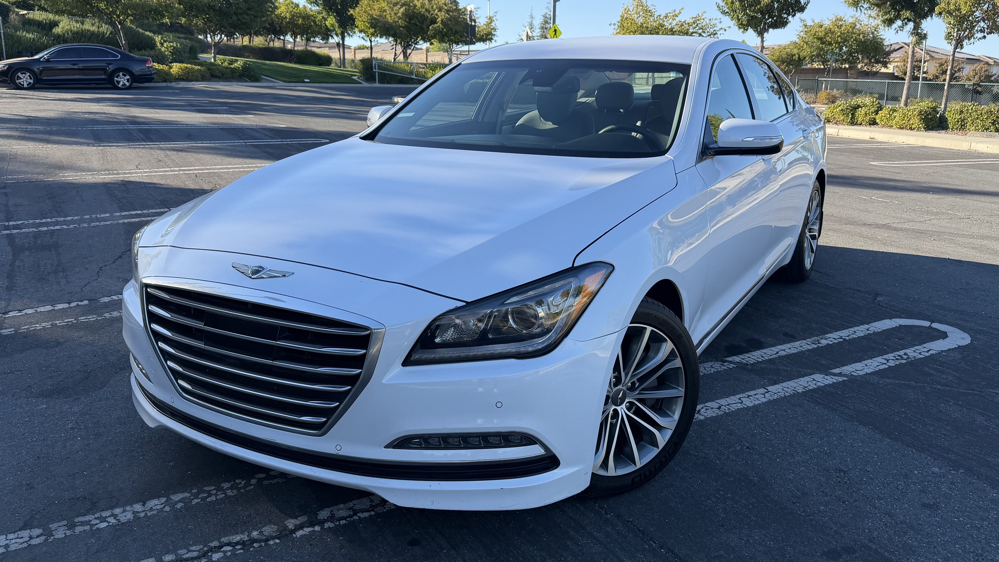
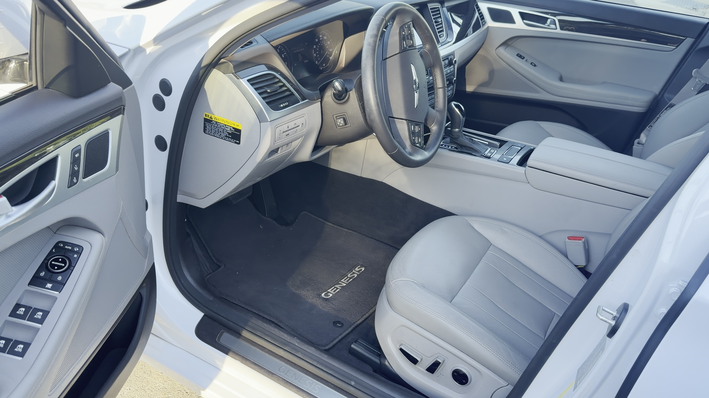
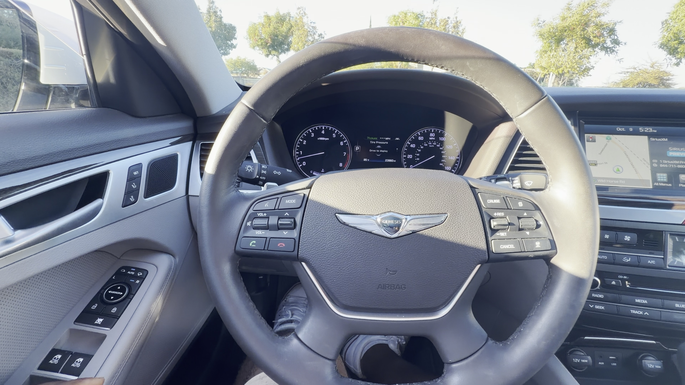
From front-end parts and cooling-system work to the finished walkaround, this project shows what it takes to bring a collision-damaged luxury sedan back together.
The final review focuses on the G80's ride comfort, cabin, controls and everyday character rather than treating it like a sports sedan.
Figure out why the G80 arrived as a non-runner, correct the problem and get the car running again.
Install and test the replacement headlight as the damaged front end continues coming back together.
Vacuum-fill the cooling system with fresh coolant, verify the system and check carefully for leaks.
Replace the HVAC component damaged in the collision and continue working through the remaining systems.
The biggest early question has already been answered: the Genesis runs. Now the focus is on completing the supporting systems and working through the collision damage correctly rather than rushing toward a finished appearance.
This page will continue to evolve as each stage is completed, documenting the G80 from its non-running arrival through the final recovery.
See the finished 2017 Genesis G80, join the drive, and hear what I love about the car after the front-end rebuild.